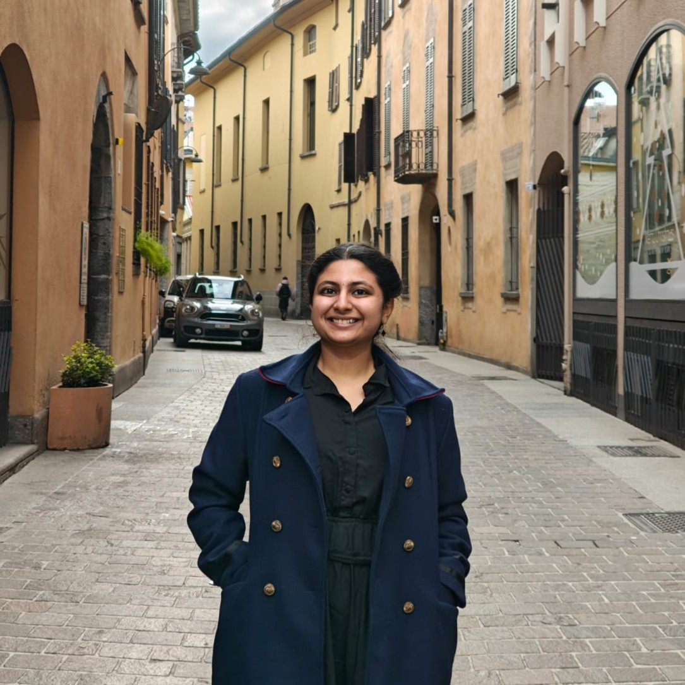

MSc Artificial Intelligence, Healthcare specialisation
Vrije Universiteit Amsterdam
- CGPA
- 7.9/10
- Thesis grade
- 9/10
Thesis: Evaluation of LLM-generated survival explanations
Hello there!
an AI researcher and engineer in clinical NLP and human–AI interaction, based in Amsterdam.
Open to AI research & engineering roles
About me
I'm a recent MSc graduate in Artificial Intelligence (Healthcare) from Vrije Universiteit Amsterdam. I build and evaluate language-model systems for clinical settings: how they explain their predictions, how confident they sound, and whether that confidence can be trusted. Healthcare draws me because it is high-stakes: a single error can cost lives.
Away from the screen, I'm usually dancing Bharatanatyam or plotting my next move in a board game. Next, I want to help build AI that clinicians can rely on.
AI matters most where every decision counts.
Amsterdam UMC, Department of Psychiatry (Stress in Action)
Vrije Universiteit Amsterdam, Faculty of Science
SRM Institute of Medical Sciences, Chennai
Vrije Universiteit Amsterdam
Thesis: Evaluation of LLM-generated survival explanations
SRM Institute of Science and Technology, Chennai
Thesis: MedOntoKG, ontology-enhanced biomedical text mining
Master's thesis · 2026
Can an LLM's confidence be trusted when it explains a pancreatic cancer survival prediction?
Extended into a research paper evaluating multiple models on the same task, Manuscript under submission
Course project, team of two · 2025
Can human-defined ontology structure keep LLM-based extraction consistent and in scope?
My part: LLM-based triple generation.
Bachelor's thesis · 2024
Can NLP turn thousands of Alzheimer's research abstracts into a structured map of diagnosis, prognosis and treatment?
Led to a published Indian patent application
When Clinical Predictions Become Narratives: A Risk Communication Contract for LLM-Generated Survival Explanations
Evaluation of LLM-Generated Survival Explanations: Integrating Prompt Design, Confidence, Stability, and Grounding in Synthetic Clinical Narratives
A System and Method for Information Extraction and Knowledge Organization in Biomedical Literature
Developing a Personalized Clinical Support System Utilizing Classification Models for Drug Assessment
Clinical Trials Selection for Cancer Patients using NLP
Domain
Methods
Building LLM-based agents that hold useful, safe conversations in clinical settings.
How people read, trust and act on what an AI tells them, and when the AI should answer, ask or defer.
Checking whether an agent's answers, and the confidence behind them, hold up before anyone relies on them.